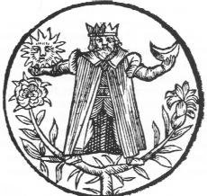
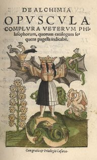

PREMIÈRE PARTIE
Nous avons ici en Allemagne un commun et vieux proverbe, après
beaucoup de pleurs grande joie, après la pluie le beau temps ;
il en est tout au contraire, ça a été à mon
grand regret depuis peu d'années, mon sort fatal ; la même
chose est arrivée quelquefois à d'autres, qui ont
commencé l'Ouvrage sans un fondement véritable, comme je
le montrerai tout au long ; car pensant tenir en mes mains tout le
monde, je n'eus rien moins que cela, d'autant que mon vaisseau de verre
sur lequel j'avais appuyé tout mon bonheur, vint à se
casser avec grand bruit et toute la matière rejaillit sur mes
minutes de Philosophie, qui en furent gâtées et salies, ce
qui me causa beaucoup de perte, mais je passe cela sous silence ; je
dis seulement que je fus fort surpris d'étonnement par ce
désastre inopiné, que je ne savais où j'en
étais, ni ce que je faisais, tant j'étais devenu triste
et affligé ; car toute ma joie et mon espérance
s'étaient tournés en venin et non pas en l'Or et en
l'Argent que j'attendais.
[
la
joie, en grec cara,
est ce qui réjouit le coeur : il ne saurait être question
que de l'Âme, c'est-à-dire du Soleil ; les alchimistes le
nomment leur or alchimique. Quant à l'espérance, elpiV,
elle ne peut renvoyer qu'au Corps, appelé encore Sel. Autant le
Joie ne pose guère de problème de cabale, autant
l'Espérance se révèle beaucoup plus difficile
à cerner : elle est liée pour partie au Mercure en tant
que la Justice y participe, de façon intrinsèque. On ne
saurait nier qu'elle est liée aussi à l'Aurore,
c'est-à-dire à Vénus, sous la forme de Lucifer,
cf. Aurora
Consurgens et humide radical
métallique.
Et aussi à la figure de saint Matthieu, dont le rapport à
l'EAU est évident. Rappelons encore que le VERT est couleur
d'espérance : on lira avec profit de ce que dit Jules Verne,
dans le Rayon Vert, de toute
la symbolique à tirer de la conjonction du Soleil, de l'Eau et
du crépuscule vespéral. Ce vert, à ce qu'il
paraît, aurait des prorpriétés remarquables qui le
distinguerait comme une sorte de rayon igné pourvu d'une sorte
de principe vital : ce rayon vert aurait pour vertu de faire que
celui qui l'a vu ne peut pas se tromper dans ses sentiments, le ragerd
détruisant mensonge et illusion. En somme, celui qui voit le
rayon vert voit clair dans son coeur. Mais est-ce donc un hasard si la
vue du vert prédispose à voir le rosé ?
L'optimisme n'est pas loin... Mais de l'optimisme à la joie, le
chemin est encore lon gà parcourir. Pour le pseudo Lulle, cf. Chrysopée,
l'Espérance repose sur la Vérité et la Bonne Foi.
Pour Basile Valentin, cf. Douze Clefs de Philosophie,
l'Espérance débute là où finit la
Rhétorique, habillée de gris : elle semble parée
de belles couleurs ; s'agirait-il de celles que l'on aperçoit
dans la queue de paon ? On serait porté à le croire. Le
saphir est la pierre de l'Espérance : il dissipe la
pauvreté - c'est du mpoins ce que lui prête la
légende -. Dans le Myst. Cath., Fulcanelli a parlé de
l'Espérance - l'un des Vices et
Vertus du portail central de
Notre-Dame de Paris comme l'hiéroglyphe de l'Evolution ainsi que
des couleurs et régimes du Grand Oeuvre. C'est évidemment
de la pure cabale quand Grasseus se déplore du fait que son Or
et son Argent s'étaient transofrmés en venin - ioV - puisqu'il s'agit de la première
opération sans laquelle rien n'est possible : la formation des
chaux métalliques. ]
Etant donc un peu revenu et rentré en moi-même, et ayant
considéré attentivement la grande perte que j'avais
faite, et l'incommodité que je recevais de cet accident ; je
commençai à deux genoux, les larmes aux yeux, et d'un
coeur gémissant, de représenter mon malheur à celui
qui de toute éternité voit toute. choses ; car Dieu
donne et ôte à qui lui plaît. Je lui fis une
instante prière, afin qu'il eût pitié de moi, en
m'inspirant la vraie voie pour arriver devant sa Divine Majesté
par l'esprit de vérité et de sagesse [
Grasseus
s'appuis sur les textes de Bernard Le Trévisan et de Denis
Zachaire sur les déplorations et les prières ; ce n'est
pas autrement que devait s'exprimer Cyliani en son Hermès Dévoilé,
texte du début du XIXe siècle; rappelons ici
que lorsque les alchimistes disent qu'ils prient, c'est pour
évoquer des matières soufrées en raison de
l'assonance entre qeion et qeioV ; et que lorsque leur coeur gémit,
c'est qu'ils mettent leurs matières au creuset] ;
ce qui me donna
aussi de la consolation, fut ce que dit Zachaire [
Opuscule très
excellent de la vraie Philosophie Naturelle des Métaux
], que beaucoup de
Philosophes ont failli au commencement qui néanmoins sont enfin
parvenus au bout de leur Ouvrage. Comme donc j'étais presque
accablé de diverses pensées pour le fâcheux
accident qui m'était arrivé sur la rupture de mon
vaisseau, il me vint en pensée une question qui tourmentait mon
esprit, savoir si le Tout-Puissant voudrait bien permettre que nous
autres pauvres pécheurs (venant en ce siècle si pervers
et corrompu) puissions parvenir à la connaissance d'un si grand
Secret, comme est la Pierre des Philosophes.
Après ces inquiétudes et mouvements, je pris enfin la
résolution de ne plus m'inquiéter l'esprit,
considérant que tous ceux qui nous ont
précédé, et qui ont atteint à la parfaite
connaissance de ce saint mystère, ne laissaient pas d'être
pécheurs comme nous, et que ce don de Dieu ne se
révèle pas à cause d'aucun mérite qui soit
en l'homme ; mais c'est une grâce particulière de Dieu,
puisque nous ne sommes que très inutiles et pleins d'erreur.
Cette considération me fit prendre une ferme résolution
de me convertir à Dieu, et de n'avoir plus que son honneur pour
but, et le secours du prochain pour toutes mes entreprises. Etant en
cette ferme volonté, je sentis une sainte extase et certaines
émotions qui me donnèrent de la clarté parmi mes
précédentes afflictions ; et me relevant de ma
prière, je me trouvai incité à reprendre en mains
mes Philosophes.
Mais il me sembla que je devais surtout préférer le Comte
de Trévisan [
Verbum
Dimissum, Philosophie Naturelle des
Métaux, Songe Verd],
lequel, quoique auparavant j'eusse bien
feuilleté, je n'y découvrais rien néanmoins qui me
donnât un fondement assuré, mais après cette
illumination, comme je fus à l'endroit, où l'Auteur
traite de la première matière, je me sentis
intérieurement éclairé, reconnaissant en quoi
consiste vraiment la vertu et puissance de l'oeuvre, et d'abord je
tressaillis de joie, mais examinant continuellement cette science, je
trouvai mon entendement tout à fait ouvert, où auparavant
il avait été clos et resserré, et quoique avec
tant d'étendue et de soins, je me fusse ci-devant occupé
en beaucoup d'opérations, elles avaient toutefois
été faites en vain, car j'étais mal fondé.
Partout je louai Dieu, et invoquai avec joie son saint Nom ; je
continuai à le prier humblement qu'il me donnât la
perfection de ces bons et solides commencements, qui n'avaient en moi
autre fin que sa gloire et mon salut. [
Grasseus
ne dépasse pas ici le niveau d'argumentation de Bernard Le
Trévisan et de Denis Zachaire. On peut d'ailleurs ajouter
Cyliani sur cette liste.]
A l'instant je continuai à bien comprendre cette matière,
afin que je ne me méprisse plus par les apparences, mais que je
misse le doigt sur celle qui se peut dire et nommer matière
prochaine et non éloignée ; car celle-là est plus
riche et fertile que celle-ci, quoiqu'elles tendent toutes deux
à même but, selon le bon Riplée, en ses axiomes des
douze Portes, et selon Flamel, fol. 120 Item
fol. 180, ou 150,
où il dit que c'est surtout un très grand secret de
pouvoir connaître de quelle chose minérale on doit
prochainement faire l'oeuvre. [
sur Flamel, cf. Figures Hiéroglyphiques,
le Désir
Désiré et le Bréviaire ou Testament
in l'alchimie de Flamel de Denis Molinier]
Or comme j'étais allé faire un voyage, je me trouvai
entre deux montagnes, où j'admirai un homme des champs, grave et
modeste en son maintien, vêtu d'un manteau gris, sur son chapeau
un cordon noir, autour de lui une écharpe blanche ceint d'une
courroie jaune, et botté de bottes rouges, lequel je saluai.
M'étant approché, j'aperçus qu'il tenait en ses
mains deux fleurs très éclatantes et
étoilées à sept rayons ; l'une de ces fleurs
était blanche, et l'autre rouge. Je les considérai bien,
parce qu'elles étaient très belles, brillantes et de
très belles couleurs, fort odoriférantes et
agréables au goût ; de plus, l'une tenait du
féminin et l'autre du masculin, croissant néanmoins
toutes deux d'une même racine et de l'influence de toutes les
Planètes. [
allégorie sur le thème de
l'hermaphrodite; les fleurs aux sept rayons représentent une
variation sur l'arbre solaire et lunaire ; sur la racine, cf. humide radical métallique.]
Je demandai à cet homme quel était son dessein sur ces
deux fleurs, car j'en avais assez bonne connaissance, mais non pas
qu'il y eût en elles une intention distincte, ni qu'elles fussent
mâle et femelle, c'est-à-dire de deux différentes
natures. Lors, m'envisageant fixement, il me demanda qui m'avait
adressé en ce lieu inhabité ; qu'il était, dit-il,
recherché des plus grands de ce monde, mais rempli de beaucoup
de périls, et presque inaccessible. Comme je lui eus
dépeint le cours de ma vie, mes aventures et
emplois, il se sourit, n'en tenant pas grand compte ; il me traita
toutefois fort civilement, commençant à me tenir ce
discours :
«
Tu sauras que qui que ce soit n'arrive
à la connaissance
de ces deux fleurs, qu'il ne soit appelé de Dieu, guidé
par la foi et par invocation ; encore lui arrive-t-il en ses recherches
de grandes peines, ennuis et afflictions, afin que cette haute
science lui soit à grande vénération lorsqu'il la
possédera comme un trésor cher acheté. »
«
Mais puisque tu es parvenu jusqu'en ces
lieux, tu verras que
Dieu m'autorise à te dire, que de ces deux fleurs provient
(après leur conjonction, et non point plus tôt) la
première matière de tous les Métaux, ce qui t'est
confirmé par Trévisan sur la fin de sa seconde partie,
où il nomme ces deux fleurs, homme rouge et femme blanche ; mais
les Philosophes, pour beaucoup de raisons, ont dit plusieurs choses sur
le sujet de cette première matière, pour la couvrir elle
et sa racine comme d'un voile, et ils se sont aussi bien gardés
de découvrir la seconde matière : quoiqu'il faille
premièrement que tu traites cette seconde matière, qui
est crue et indigeste, et qui est toutefois le sujet de la Pierre, il
faut que tu la tires comme de l'homme et de la femme, qui après
la conjonction devient la matière première que je te
déclare ici avec sincérité. »
[
on
remarque l'ambiguité qui est manifestée quant au fait de
savoir s'il est question ici de la prima materia ou de la materia
prima. La première est la matière que l'on recueille es
cavernes de la terre et c'est un travail de la nature ; au lieu que la
seconde est le travail de l'Art : les alchimistes la nomment la pierre
des philosophes et il ne s'agit pas, bien sûr, de la pierre
philosophale.]
Je m'étonnais de ce discours, qui pourtant me donnait de la joie
pour le contentement où je me trouvais d'être avec lui ;
sur ces choses, je ne pus me tenir de lui dire : Ami, ta
simplicité m'eût bien empêché de chercher en
toi des choses de si haute intelligence ; il se mit à sourire et
me dit : C'est en vérité cette simplicité qui met
tout le monde en erreur, et qui fait que je suis négligé
d'un chacun ; car ma forme extérieure les trompe tous, voyant ma
bassesse, et ce qui semble vil en moi ; mais lorsqu'ils me prient
courtoisement de quitter ma jaquette grise et mon manteau de bure, je
les exauce, et leur fais voir là-dessous un habillement
diamantin, et une fourrure de rubis, ou si tu veux, une chemise
très précieuse ; mais le Tout-Puissant les a presque tous
aveuglés, afin qu'ils ne voient de quoi ces Métaux ont
pris leur origine. [
il s'agit, selon nos hypothèses,
d'une matière qui se tire des boues ou faex.]
Je lui répartis, cher Ami, habitant des champs, ces fleurs ont
un lustre et éclat très hauts, mais pourtant elles ont
aussi propriété de Médecine. Il répondit,
elles sont bien médicinales, mais leur plus grande
propriété est cachée en elles, car lorsqu'elles
sont sur leur propre racine, elles sont vénéneuses [
allusion
aux oxydes métalliques, ioV] :
c'est pourquoi il faut que leur racine soit bénignement et
délicatement sublimée avec soin, comme je veux croire que
tu sais ; ce que je juge par tes opérations [
sur
les rapports entre sublimation et conjonction, cf. la Philosophie
Naturelle Restituée de D'Espagnet avec un article de
Chevreul] ; quoiqu'elles
t'aient mal réussi jusqu'à présent, je ne
révoque point en doute que tu ne comprennes bien ce que veut
dire ici cette sublimation, laquelle se fait sans qu'il y entre jamais
rien de mordicant ni corrosif, qui détruirait la bonté de
sa nature : et c'est de là que prennent leur naissance ces deux
belles fleurs, sans addition d'autres choses, étrangères
et différentes, tirées de cette montagne contagieuse ; et
si je n'eusse su sous quelles Planètes l'on constelle les hommes
des champs, je ne serais jamais arrivé, ni pu me rendre à
ce lieu si remarquable. [
allusion à peine voilée aux
trois signes du zodiaque où la tradition recommande de
débuter l'oeuvre, encore que, là encore, il soit
nécessaire de comprendre avec un grain de sel, cf. le Triomphe
Hermétique de Limojon de saint Didier]
Je lui dis, cher Ami, tes discours m'engagent à te supplier
encore de me dire, si ces deux fleurs prennent naissance et croissent
toutes deux à la fois, et ce qui est de leur production ; car je
me propose qu'en cet éclaircissement sont
révélés de grands secours de la science : je tiens
à honneur et grand avantage d'en être éclairci,
parce que les Philosophes en ont très peu parlé. A cela,
au lieu de sourire, il fit quelques branlements de tête, et se
tint en silence assez longtemps ; puis il me dit, tu me demandes la
pierre d'achoppement, où plusieurs trébuchent ; car
beaucoup connaissent la première matière, mais ils errent
au fait de cette maîtrise [
c'est du reste ce dont se plaignair
amèrement Limojon : il assure qu'il possédait la
matière mais que, faute de la connaissance de la nature du feu
pour la préparer, il avait erré pendant vingt
années avant de trouver la solution...] ;
pourtant, sois ici demain de retour
à cette même heure (vingt-quatre heures après), tu
m'y trouveras disposé à te donner intelligence de ces
choses, tout autant qu'il m'est permis. Je le remerciai, me
séparai joyeux et restai tout ce temps en grande
inquiétude de l'heure à venir, que j'observai
ponctuellement.
Je le vis donc arriver, tenant les deux fleurs en sa main, et le sommai
de tenir sa favorable promesse, le suppliant de croire que je lui
étais absolument acquis, quoique je reconnusse bien lui
être fort inutile. A quoi il me dit ces mots : pourvu que tu sois
bien à Dieu, je serai bien à toi, et toi à moi ;
sinon je serai toujours éloigné de toi, si tu es
éloigné de Dieu ; mais d'autant que je crois que tu es
à Dieu, je te découvre ici tout le procédé,
et te répéterai mes premières paroles, sur chacune
desquelles tu dois avoir une particulière attention, avec
prières continuelles à Dieu. Cette Science est un don
spécial de la bonté suprême ; prends donc bien
garde à toutes mes dites paroles, et examine les très
exactement. Assis-toi avec moi sur cette verdure, car je suis vieux et
d'un naturel froid, je n'ai pas de bonnes jambes, ni bien robustes,
c'est pourquoi je ne puis pas me tenir longtemps debout, et de plus je
me plais fort à me reposer sur la verdure. [
nous
retombons là sur la gravure que l'on voit en frontispice de l'Azoth, attribué au pseudo
Basile Valentin, où l'on voit les figures de Senior et
d'Adolphus ; on remarque une semblable gravure, avec des variations,
dans l'une des planches de la Philosophia Reformata de Mylius.]
Tu as sans doute lu que nos Mages, Philosophes et Rois, écrivent
et disent à tous, suivez la Nature, suivez la Nature ; et c'est
de là que tu dois inférer que tous ceux qui veulent
produire quelque chose d'avantageux et de grand en cette Science,
doivent surtout avoir entière connaissance de l'origine et
fondement de tous les Métaux, de leur naissance, production et
différence, de leur sympathie et antipathie, c'est-à-dire
amour et haine.
Sache de plus, que tous les Métaux sont provenus d'une
même racine, la matière dont ils prennent leur origine
n'étant qu'une et unique, et ils n'acquièrent leur
différence que par la cuisson, c'est-à-dire, selon qu'ils
sont plus ou moins cuits ou digérés. Les bons Auteurs te
confirment cette vérité ; mais ne te dégoûte
point de leurs différentes façons ; fuis seulement les
donneurs de recettes et de procédés particuliers ; sois
donc infatigable à lire les bons Auteurs, et le retardement
récompensera ta patience et ta peine.
Mais sache en peu de mots, que celui qui comprendra bien l'origine de
nos Métaux, connaîtra que la matière des
nôtres doit être métallique, née aussi de
minière métallique sans métal ; car il n'y a point
de métal sans lumières métalliques, ni aussi de
lumières métalliques sans métal ; et ainsi
conséquemment l'un se rapporte à l'autre ; car leur
être naturel et leur genre est un, qui se nomme électre
minéral-mineur non mûr, ou magnésie [
il
est très rare de voir la magnésie commentée dans
les textes ; les alchimistes l'assimilent à leur Aimant, par
opposition à leur Acier, cf. Matière.
Il est possible que cette mégnésie ressortisse de la
gangue minérale des métaux], ou autrement
lunaire ; et de là vient que les Philosophes parlent toujours au
pluriel quand ils disent, par exemple, nos métaux. [
Quant
à la Lunaire, là encore le terme est ambigu car on ne
sait s'il s'agit du 1er Mercure ou du Sel. Nous avons, à de
nombreuses reprises, envisagé ce problème. ]
Mais il faut que je t'en entretienne plus clairement, puisque tu as la
véritable connaissance de la vraie matière, dont cette
racine métallique doit être doucement
séparée de ce qui lui est contraire, ou contre nature ;
je veux dire de ce qu'elle a acquis accidentellement des vapeurs
vénéneuses.
Puis il faut en extraire cette blanche et mercurielle liqueur, qui est
si délicate et fluide, laquelle il faut rechercher dans sa
partie supérieure ; et son nom est Azoth, ou glu de l'aigle [
Azoth
est l'un des noms les plus utilisés par les Adeptes pour parler
de leur Mercure, mais le qualifier de « glu de l'aigle »
n'est point courant. Quoi qu'il en soit, l'expression est fort
intéressante car elle permet d'expliquer maints points
d'iconographie se rapportant à l'aigle qui n'arrive pas à
prendre son vol, cf. Lambsprinck et son De Lapide Philosophorum ou Thomas
d'Aquin et son supposé Aurora
Consurgens.] ;
mais sa liqueur fixe sulfurée, rouge et incombustible, se doit
chercher dans la partie inférieure la plus occulte, et s'appelle
laiton, ou lion rouge ; à bon entendeur suffit. [
le
Lion rouge représente le Lion vert dans lequel le Soufre a
été infusé ; en d'autres termes : le Lion vert est
le Mercure des Philosophes et le Lion rouge est le véritable
Mercure philosophique]
Mais s'il te manque quelque lumière, invoque le Nom du Seigneur
des lumières, et l'Auteur de toute bonne donation ; et remarque
surtout avec admiration que ces deux fleurs jamais ne se sèchent
ni se flétrissent, que l'une se peut convertir en l'autre en
toutes formes et figures, et qu'elle a de la pente et de l'inclination
à toutes les sept Planètes, auxquelles si une fois elle
se joint, elle ne s'en sépare plus : la vertu naturelle et la
propriété de ces fleurs ne se peut assez doctement
décrire par quelque Philosophe que ce soit.
Tu vois maintenant que ces deux fleurs proviennent d'une même
tige, qui est septuple et susceptible de toutes couleurs [
sur le
plan purement chimique, on serait tenté de voir dans cette fleur
protéiforme un sel de cuivre : Marc-Antoine Gaudin, cf. Soufre a insisté sur les couleurs
très variées que l'on peut faire prendre aux oxydes du
cuivre, en fonction des degrés de cuisson de la matière]
; mais icelles
fleurs sont assez éloignées l'une de l'autre, ce qui
provient de leurs différentes natures, et partant il faut
trouver le moyen de les joindre et unir, de les faire
végéter et croître [
c'est
dire assez que l'une est de vertu minérale et l'autre de nature
métallique ; comment les joindre en une conjonction radicale ?
Sous quelle forme ? Voilà les deux secrets que les alchimistes
ont scellé dans leurs grimoires. La solution réside dans
l'artifice que préconise d'utiliser Fulcanelli. Ce n'est pas
tout : Grasseus emploie l'expression « faire
végéter et croître » qui représente -
sous d'autres plumes moins charitables - la multiplication,
voilée sous tant d'énigmes et de paraboles - cf. l'une
des planches du Mutus Liber - qu'il en devient
impossible de rien comprendre aux écrits des alchimistes ]
; il faut que de ces deux se
procrée un fruit excellent, indissoluble et perpétuel, ce
qui n'arrive pas sans l'expresse permission du Souverain.

Azoth, figure seconde
Au surplus, sache que le compte, où le nombre de la semence ou
germe du lys blanc [
on trouve cette expression au cap. 53 de l'Oeuvre Secret d'Hermès de Jean D'Espagnet] est différent de celle du lys rouge [
analogue des violettes rouge vif, cf. même traité], et que
ces deux fleurs n'opèrent pas en même temps ; ce que les
anciens Sages ont tenu fort clos et couvert, et c'est ce qu'ils nomment
leurs poids sans poids : ces deux lys ne s'unissent pas et ne se
mêlent par menues parties [
Dans son Escalier des Sages,
Van Helpen écrit que la Pierre est nommée par le Petit
Paysan - il se réfère au présent traité -
« Le suc des Lys
Blanches : sans doute à cause que cette matière est tirée
des sels minéraux et métalliques qui sont blancs comme le
Lys. »]. Les Anciens parmi les Arabes
parlant de ces choses en ces termes, disent que le poids du mâle
est singulier, et celui de la femelle est toujours pluriel [
le Cosmopolite assure, dans la Nouvelle Lumière Chymique, que le poids du Corps est singulier et que celui de l'Eau est pluriel]; ce
qu'expose le Comte de Trévisan en cette sorte : La puissance
terrienne sur son résistant selon la résistance
différée, c'est l'action de l'agent en cette
matière [
il s'agit d'une citation de la Philosophie Naturelle des Métaux de Bernard Le Trévisan ; on la retrouve sous la plume de Denis Zachaire dans l'Opuscule Très excellent de la Vraie Philosophie Naturelle des Métaux ; les deux textes sont liés de même d'ailleurs que les deux Adeptes, cf. Cambriel là-dessus] ; entends-tu cela ? Je répondis que ces termes
sont obscurs ; à quoi il me répliqua que je ne m'en misse
point en peine ; car, dit-il, si tu arrives à l'accroissement de
ces deux fleurs de lys, lors tu connaîtras par leur propre
essence propriété et nature, ce que tu auras à
faire et non autrement ; je te donne avis d'avoir grand soin que la
chaleur de ton feu soit lente et bénigne ; car autrement la
semence du lys blanc s'évaporerait en fumée, et tout ton
travail serait réduit au néant. [
dans leurs synthèses des pierres gemmes, les chimistes français insistent - en particulier Ebelmen
- sur l'importance de la longueur du feu et sur sa tenue
régulière. Quant au lys blanc, s'agit-il de l'alumine ?
Cf. section Soufre et les travaux de Marc-Antoine Gaudin]
Puis je lui dis, tu as fait mention de deux lys, et toutefois les
Philosophes disent quelquefois qu'en une seule chose, ou un seul
Mercure et Azoth, consiste tout ce que cherchent les Philosophes, ou
Sages, quelquefois ils parlent de trois choses, du Soufre, Mercure, et
Sel, et le plus souvent d'âme, d'esprit et de corps ; cependant
tu n'en fais aucune mention. [
les
termes énumérés sont strictement
équivalents. Chacun fait l'objet de nombreux traités,
consacrés spécialement au sujet ; Michel Sendivogius est
l'auteur supposé d'un traité sur le Soufre ; Nuysement a
rédigé un traité sur le Vrai Sel des Philosophes
et Daniel Cramer a écrit un traité sur l'Âme qui ne
dit pas son nom.]
Il faut, dit-il, que je me rie de toi, de ce que tu n'entends pas
encore les termes des Philosophes, et qu'ils te soient si peu connus,
ou bien c'est que tu veux m'éprouver ; il faut donc que je te
soulage en cela. Sache donc que les Philosophes entendent par une seule
chose le sel des Métaux, ou Pierre Philosophale, et par deux, le
corps et l'âme, dont le tiers est l'assemblage de ces deux ;
à savoir l'esprit, lequel on ne peut apercevoir, d'autant qu'il
est caché en ces deux ; et ainsi l'on peut dire que cet esprit
surnage sur les eaux ; or tu le peux lire en Moïse : que cela te
suffise. [
certains
alchimistes n'ont pas employé les termes d'esprit, de corps et
d'âme dans l'acception commune, cf. Lambsprinck en particulier et
son De Lapide Philosophorum.]
Mais quant à moi je m'en tiens volontiers à ces deux ;
c'est pourquoi prends ces deux lys très clairement polis, et les
ayant renfermés en un cristal bien bouché, sans feu, mets
les en une douce et légère chaleur d'athanor [
l'athanor
est un générique pour qualifier le vase de nature dont la
nature ou du moins l'un des principaux comosants est nettement
défini par l'expression « cristal bien bouché »] :
lors le lys blanc s'épandra au large, embrassera et contiendra
en soi le lys rouge [
Fulcanelli
a parlé de cette opération en écrivant qu'il
s'agissait de l'Hypérion de l'oeuvre, qu'il faut lire par cabale
uper ion : c'est le firmament de Philalèthe - Introïtus, VI - et le Ciel des Philosophes], et d'autant que le lys rouge est d'une nature
ignée, et qu'il reçoit aide de la chaleur externe, il
communique et donne son odeur et haleine de baume chaleureux dans la
froideur du lys blanc, d'où naît un discord [
on
observe au portail central de Notre-Dame de Paris un médaillon
des Vices et des Vertus qui exprime cette opération de la
conjonction des contraires : on remarque que l'un des enfants
batailleurs a laissé choir un pot de terre tandis que l'autre a
laissé tombé une pierre que le graveur a saisi au vol :
est-ce une représentation de la pierre noire de Pessinonte ? Cf.
symboles], l'une ne
voulant céder à l'autre,
ce qui procède des
qualités contraires qui sont en eux, comme tu sais, puis ils
s'élèvent tous deux au Ciel, ou pour mieux dire, ils
croissent tous deux au Ciel [
on trouve une superbe gravure de Lambsprinck qui détaille ce processus de la conjonction : il s'agit de la douzième figure], mais ils sont par après
repoussés par le vent, et ce par plusieurs et tant de fois
qu'ils sont devenus las et fatigués du travail de monter et
descendre ; ils sont contraints de se reposer en terre, et sache que si
le bain n'est tellement régi et gouverné, à ce que
leurs natures ne s'élèvent toutes deux à la fois,
mais chacun à part, ou l'une après l'autre, tu ne jouiras
jamais de leur odeur : partant prends bien garde à cette
opération grandement remarquable. [
il
s'agit des sublimations philosophiques qui constituent, à n'en
point douter, le secret le mieux réservé des Sages. Nous
dirons simplement ici que la sublimation est intimement liée
à la conjonction.]
Or d'autant qu'à cause de ces deux natures ou qualités
ennemies, et contraires, l'un de ces deux lys ne peut se rendre
prédominant sur l'autre, ils se rallient et s'unissent de telle
amitié ensemble, qu'ils ne se veulent plus séparer ; puis
après, en cette union ou ralliement, tout le Firmament
s'émeut semblablement, et le Soleil et la Lune en deviennent
ténébreux et obscurcis, autant qu'il plaît au
Très Haut ; après quoi par l'amour du Tout-Puissant,
l'Arc-en-Ciel de toutes couleurs se fait voir en l'air [
cet arc-en-ciel est visible sur le Clef VI
de Basile Valentin ; on distingue la scène de la conjonction
où le vicaire sert d'entremetteur. De gros nuages font
comprendre la signifiance du déluge des fleurs de lys dont parle
Grasseus], pour marquer
qu'alors tu ne peux plus douter que Dieu te soit propice, et que le
déluge de ces deux fleurs de lys n'arrivera plus, de quoi tu te
dois réjouir.
Tu apercevras aussi en peu de temps, que la Lune peu à peu se
fera voir moins ténébreuse qu'auparavant, et finalement
ornée d'une lueur, blancheur et clarté d'un très
beau lustre, mais le Soleil est encore caché derrière la
Lune, lequel à cause de l'interposition de la terre ne se peut
encore voir ; que si tu as les yeux de l'entendement ouverts, tu
apercevras quatre Planètes dans la Lune, lesquelles par
l'éclat de sa lueur, tu convertiras et transformeras en sa
permanente nature.
Mais quand la Lunaire ou l'Ecrevisse s'approche du Soleil, et que la
chaleur se multiplie et croît de plus en plus, lors la Lune est
offusquée par les rayons et l'éclat lumineux du Soleil,
jusqu'à ce qu'elle soit contrainte de se cacher derrière
lui et dans ses rayons ; comme au contraire cet éclatant Soleil
vient par la conspiration des autres Planètes à se
revêtir d'une belle et agréable couleur, et se trouvant
tout irrité par leur moyen, il commence à pâlir,
puis à se couvrir, et devient rouge comme sang : mais d'autant
que ces Planètes s'humilient devant lui, comme devant leur
Seigneur, et bon Maître, Dieu l'ayant ainsi ordonné, il
les reçoit finalement à grâce, et se les rend
égales, en les associant à son règne par une
étroite union et amitié. Etant donc ainsi unies et
anoblies, elles louent Dieu d'un si grand et si merveilleux ornement,
et de leur si excellente amélioration elles consacrent le tout
à sa louange et gloire.
Vois maintenant que je t'ai tiré de ton doute et de ton
incertitude, et sois entièrement dans cette croyance, que tu as
acquis l'entière intelligence de toute l'affaire ; mais il faut
que tu gardes le silence, en priant Dieu qu'il te fasse la grâce
d'en user droitement avec beaucoup de discrétion, car si tu fais
autrement tu ne me re verras jamais.
Je restai à cela tellement étonné et interdit, que
je n'avais point de paroles suffisantes pour lui rendre des actions de
grâces, quoique je fusse porté et enclin à lui
témoigner toutes sortes de reconnaissances, je ne laissai pas
toutefois avec toute soumission de lui faire encore quelque demande,
savoir si rien n'était plus à ajouter à la
Science, et si elle avait là son terme et accomplissement ;
à quoi il me répondit gracieusement : Tu sauras que la
vertu et l'efficace de ces deux fleurs de lys s'amplifient et se
renouvellent de trois jours en trois jours, qu'elles se multiplient et
s'ensemencent à milliers ; ce qui advient lorsque la semence est
jetée dans la première et précédente terre
; ainsi au premier jour les ténèbres paraissent ; au
deuxième, une claire lueur de Lune se fait voir ; et au
troisième un Soleil chasse les ténèbres venant de
son couchant, et cette affaire se provigne autant que le Tout-Puissant
le veut ou le permet.
De la nature de cette Pierre se forment d'autres pierres
précieuses de toutes sortes ; mais son grand effet tend à
la connaissance et au culte du Tout-Puissant, ainsi qu'à la
longueur et prolongation de la vie ; et même si quelqu'un arrive
à la possession de la moindre feuille de ces fleurs de lys, il
aura des antidotes contre toutes infirmités et maladies ; comme
aussi celui qui arrivera à la possession de la moindre fleur de
lys, aura de quoi se rendre heureux.
Mais je te reviendrai voir dans neuf mois, et lors je t'exposerai plus
au long les propriétés de ces fleurs, car il faut que je
me retire ; j'aperçois toutefois que tu es en quelque trouble
à cause de mon extérieur, d'autant que tu me vois couvert
de cette enveloppe ou jaquette grise, de laquelle je me suis
revêtu, afin de me voiler aux Puissances qui veulent me ravir et
me tourmenter par leurs géhennes ; mais ne t'ai-je pas dit que
je suis en mon intérieur et dedans revêtu et paré
d'Or, de Diamants, d'Emeraudes et de Rubis.
A quoi je répartis en grande soumission, reconnaissance, et
très humbles prières, qu'il me fût permis pour un
plus grand éclaircissement, de faire encore cette demande ; je
lui dis donc : tous les grands Auteurs nous représentent qu'il y
a de grandes observations à faire au régime du feu, et
que les grandes choses en dépendent, puisqu'il doit souvent
être plus ou moins chaud en ses degrés ; de plus je
souhaiterais fort connaître distinctement quelle est la
matière la plus prochaine de la Pierre, de laquelle l'on doit
extraire la forme spécifique, ou bien ces deux belles fleurs ;
car encore que je sache la matière générale, je
suis pourtant encore en doute en ce premier point touchant la plus
prochaine, et ce d'autant que Clangor Buccinae [
ce
texte apparaît dans le De Alchimia Opuscula, 1550, i. f. 19 ;
dans le volume Artis Auriferae, 1610, i., p. 288 et dans la Bibliotheca
Chemica Curiosa de Manget, 1702, ii., pp. 147. On l'appelle
encore Der Thon der Schalmeyen ou Clamor.] nous dit, qu'à
peine peut-on d'une livre de matière en tirer le poids d'une
drachme, dont on puisse utilement opérer en l'oeuvre, et moi je
me proposais que d'une livre on en pourrait préparer plusieurs
onces, tant pour le rouge que pour le blanc. [
Basile Valentin préconise de « chercher la dragme perdue »]

frontispice du De Alchimia Opuscula Complura
Tu me presses de trop près, me répondit-il, et tout ce
que tu tireras encore de moi aujourd'hui, c'est que tu prennes garde
que sous cette mienne casaque ou jaquette grise, je porte une
chemisette verte et rouge, que si tu la rends polie et
perfectionnée avec les pierres ou cailloux à feu et
philosophiques, y ajoutant de la limaille ou rouille de Mars [
colcothar ou ioV ; époque de l'oeuvre où la couleur, par cabale, est le violet, ion], et de
l'Aigle rouge fixe en l'oeuvre [
analogue du Lion rouge], alors cette chemisette se perfectionnera
grandement, et puis quand tu l'auras plongée dans une luisante
fontaine d'une très claire Lune [
il
s'agit du Mercure des philosophes ; l'action de plonger la «
chemisette » dans cette Lune est l'opération par laquelle
le Mercure se transforme en Mercure philosophique ou animé], cette Lune l'enrichira de six
autres Soleils, bons et valables, que tu retireras à chaque
opération pour ton usage, et que tu pourras chaque semaine te
procurer ce profit, dont tu vivras avec honneur et commodité,
même jusqu'à très bons revenus annuels, en
attendant la perfection de ton oeuvre.
C'est ce que l'ami peut ouvertement dire et déclarer à
son ami, en gardant toujours le silence sur ce qui fait
l'entière conduite du grand oeuvre, que Dieu distribue de
lui-même ; il s'en est réservé à lui seul la
dispensation.
A ces mots mon Docteur s'évanouit et entra dans le vaste et
profond de la montagne, et les deux fleurs de lys demeurèrent au
même endroit, auquel se glissa le dit Agricola,
c'est-à-dire l'homme des champs ; je m'avançai pour
cueillir ces fleurs, mais étant arrivé à l'endroit
où je les avais vues, j'aperçus à leur place un
gros tas, ou masse de matière crue [
il
peut s'agir du Compost, masse où le Rebis est mélé
de Mercure ; c'est cet ensemble qui porte l'épithète de
Lion rouge ; il ne s'agit donc pas de la pierre philosophale mais de la
véritable pierre des philosophes], et la vraie Pierre dont le
poids était de plusieurs livres, et tout proche était un
Ecriteau portant ces mots ; Dieu vend ces biens par les travaux ; ce
qui fut la fin de mon entretien.
SECONDE PARTIE
Lorsque j'eus remercié de tout mon coeur, loué et
exalté l'Eternel, seul Dieu Tout-Puissant, Créateur de
toutes choses, pour la grâce qu'il m'avait faite de la
révélation ci-dessus ; je pris ma seconde matière
(la première matière suivra ci-après) ; je la
baisai de joie comme une chose après laquelle j'avais langui et
soupiré de tous mes sens, et au sujet de laquelle j'avais
vécu tant d'années dans le doute, les misères,
tristesses et anxiété ; je la considérai bien avec
grand étonnement, surtout à causa qu'elle n'avait aucune
apparence extérieure et néanmoins elle devait être
capable d'accomplir et parfaire un si haut, important et surnaturel
Ouvrage ; il me souvint en ce même moment de ce que le Paysan
m'avait dit, que Dieu en avait ordonné ainsi pour des raisons
très importantes, afin que les pauvres pareillement, et aussi
bien que les riches en pussent jouir, et qu'aucun n'eût sujet de
se plaindre envers Dieu, qu'il ait en cela préféré
les riches aux pauvres ; non véritablement, les riches ne s'en
soucient point et encore moins croient-ils qu'une telle vertu se trouve
cachée dans une si vile matière, comme on peut le lire au
vingt-huitième feuillet du grand Rosaire [
Du Sel des philosophes ; mais il y a au moins trois passages dans le Rosaire où l'allégorie est reprise] ; si nous nommions
notre matière de son propre nom, les fols, les pauvres et les
riches ne croiraient point que ce soit elle ; ainsi les pauvres la
rencontrent plutôt à la main que les riches.
Quand donc j'eus bien enveloppé et enclos ma matière, je
retournai au logis avec joie, chantant le long du chemin le Cantique.
Je ne fus pas longtemps au logis, que je commençais à me
fournir : 1° d'une bonne partie des choses nécessaires au
Particulier, que le bon Paysan m'avait enseigné, afin qu'avec
plus de repos et de fermeté je pusse vaquer à
préparer l'universel ; ainsi je commençai au Nom de Dieu,
j'achetai une quantité considérable de charbon, car cela
en consomme beaucoup [
le charbon est l'agent de réduction par excellence au même titre que la chaux] ; je bâtis à même fin des
fourneaux et fours, fort utiles, et en peu de temps j'eus une provision
considérable de charbon ; mais le Démon, ennemi du
Christianisme, ne put souffrir cela, il me causa plusieurs alarmes les
unes sur les autres. Les voisins m'accusaient de mettre leurs maisons
en flammes ; mes amis et autres personnes de connaissance me
représentaient qu'il courait un bruit de fausses monnaies, et
que je me départisse d'une entreprise si vaine, crainte de
tomber dans le soupçon ; que je devais plutôt m'adonner
à l'exercice de la Jurisprudence, me disant qu'avec plus de
raison, j'y trouverais plus de succès et de profit, parce que
j'étais Docteur en Droit, et qu'il n'y avait que cet exercice
seul qui fût capable de me fournir amplement ma subsistance. [
reprise de l'allégorie de Denis Zachaire, de Bernard Le Trévisan, que reprendra à son tour le mystérieux Cyliani en son Hermès Dévoilé]
Mais quoi qu'en bonne conscience je ne pusse gagner mon pain par un tel
moyen, je ne laissai pas de faire doubler grandement le prix du
charbon, de sorte que les Forgerons et les Orfèvres
m'accusèrent en Justice, comme étant la cause de sa
cherté, se plaignant qu'ils ne pouvaient pas continuer leurs
métiers, et avoir comme auparavant leur nourriture
nécessaire, conséquemment qu'ils ne pouvaient à
cause de cela continuer à la République le paiement des
impôts et contributions, car je payais plus chèrement le
charbon afin d'être préféré aux autres ; ils
traitèrent ce sujet tout au long, si bien que le Conseil me fit
faire la défense, et savoir en même temps que j'eusse
à me désister de cet emploi du charbon, et vivre dans les
Lois de ma vacation ; en somme le démêlé fut si
ample, qu'il me fallut abattre mes fourneaux, partir de là, et
chercher un bon ami qui m'avançât de l'argent, afin que je
pusse vaquer avec plus de repos à l'universel.
Toutefois je ne déclarai à personne le dessein que
j'avais ; les mêmes tribulations et incommodités
durèrent presque jusqu'à la troisième année
; Dieu sait quelles peines cela me donnait au coeur d'entendre mal
parler de moi, sans pouvoir avancer dans l'oeuvre ; même je
songeais que Dieu ne trouvât pas encore à propos de me le
permettre : car il faut suivre le chemin où le destin nous
mène et ramène. Le Comte Bernard de Trévisan
témoigne semblablement avoir eu toute la science de l'universel
parfaitement, deux ans auparavant qu'il l'eût pu mettre à
effet à cause de plusieurs empêchements. [
rappelant en cela les plaintes de Limojon de saint Didier qui possédait la matière mais qui ne savait comment la cuire, faute de la connaissance du feu secret]
Durant mon voyage je conférai avec des gens doctes, j'en devins
plus savant, et nous nous donnâmes de mutuelles assistances par
science et conférence, ainsi qu'on a coutume de faire ; je fis
aussi amas de belle matière, de toutes sortes de mines et de
pierres de travail ; mais je trouvai fort peu, non pas même plus
de trois personnes qui tinssent le droit sentier physique ; ils
voulaient tous se servir du Mercure vulgaire, de l'Or, de l'Antimoine,
et de la mine de Cinabre [
oxyde rouge de cinabre qui connaît encore beaucoup de succès auprès des alchimistes modernes] ; et même les choses plus simples et
moindres, en quoi ils erraient tous tant qu'ils étaient, ne
travaillant et ne suivant pas le naturel sentier de la nature ; mais
s'ils l'eussent suivi, ils n'eussent pas erré si
misérablement, outre cela un don de si grande excellence ne
s'accorde pas à tous ; que chacun fasse son compte
là-dessus, et s'éprouve bien avant que la perte et le
dommage viennent à l'abattre et surprendre ; remarque cela,
celui qui en est capable.
Comme donc j'eus fini le cours de mes voyages, je revins joyeux ou
logis, alors me vinrent bientôt revoir mes prétendus amis,
voulant savoir où j'avais été si longtemps, ce que
j'avais fait et ce que je voulais faire : je leur fis une brève
réponse : le monde n'est-il pas assez grand, vous pensez
peut-être que votre ville fait tout le monde; et que hors
d'icelle on ne se puisse nourrir ; mais si vous aviez tant soit peu
essayé, vous en jugeriez tout autrement. Il y a, Dieu merci,
assez de gens qui reçoivent et reconnaissent avec grand
remerciement ce que vous méprisez et rejetez avec moquerie ; et
vous saurez en outre que dorénavant je ne vous causerai pas
grande incommodité pour le charbon, car à présent
je n'en ai pas besoin.
Ils s'étonnèrent fort de ces paroles, et secouaient la
tête pour savoir où gisait le lièvre, mais je me
privai tout à fait de leur compagnie ; je louai une maison
où je ne pris qu'un garçon avec moi.
Après les grâces rendues à Dieu, par le grand
désir que j'avais de l'oeuvre, je me résolus de
l'accomplir. La patience et la persévérance étant
la principale partie de l'oeuvre entier [
Grosparmy
a écrit que la patience était l'échelle des
philosophes et que l'humilité - dont tient la
persévérance - était la porte de leur jardin, cf. Trésor des Trésors.
Sur la patience et la persévérance envisagées au plan hermétique, cf. Gobineau de Montluisant] ; car tous les Philosophes
l'écrivent, et c'est la clef de l'Art ; chacun peut facilement
l'éprouver à sa confusion, en brûlant par le feu
les fleurs, ou autrement brûlant la vertu croissante et la
germinante nature ; c'est pourquoi il me fallait user de grande
prudence [
image du double Mercure en forme de caducée, cf. note précédente]. Je prenais bien garde aussi qu'il ne m'advînt quelque
accident par la tardivité ou par manque de chaleur, comme en
parle Théophraste [
Paracelse, cf. le Trésor des Trésors] en son Manuel, mais finalement par la
bonté de Dieu, tout m'a bien réussi.
Or comme les vapeurs vénéneuses furent retirées de
la Pierre [
il
est difficile de savoir ici s'il s'agit d'un trait de cabale ou si
Grasseus veut parler de la gangue dite « arsenicale » qui
entoure la matière première qui est un sulfure ou un
sulfate], nos deux fleurs parurent, ainsi que notre Paysan l'avait
dit, poussant belles, et doucement toutefois. J'aperçus plus
tôt la blanche, la rouge n'étant pas encore parvenue
à son degré. Je pris une petite feuille de la blanche, la
goûtai et y trouvai véritablement un goût tout
à fait doux, excellent et agréable, le semblable duquel
je n'avais jamais éprouvé, et au sujet duquel je me
réjouis lors grandement et de bon coeur. Le surplus de cette
petite feuille, je le mis sur du fer rouge de feu, elle y coula
subitement et tourna en fumée au même instant [
c'est la fumée blanche décrite par Artephius en son Livre Secret], à
quoi je reconnus que c'était la femelle, attendu qu'elle
était si volatile et légère, et par ainsi j'usai
d'une grande prudence, si bien qu'avec celle-là je me rendis
maître de la rouge, laquelle ne se souciait en façon
quelconque d'aucun travail, et ne fuyait point, mais demeura constante
et maîtresse du feu.
Toutefois, avant que j'eusse recouvré ces deux lys, j'eus
d'assez grandes traverses, dont je ne veux faire ici mention, mais cela
fut bientôt oublié, quand j'eus recouvert ces deux lys ;
je pensai au Paysan, et m'étonnai de son profond et sublime
jugement ; je suivis toujours l'instruction qu'il m'avait
donnée, et joignis les deux lys ensemble, et en cette jonction
j'aperçus lors des choses remarquables, à cause de quoi
je les enfermai ensuite toutes deux en un beau vaisseau de cristal, que
je posai tout doucement en un lieu qui donnait une grande chaleur. [
il s'agit de l'athanor secret dont Fulcanelli a comparé les traits à ceux de la persévérance]
Or comme le Soleil commençait à luire, le lys blanc vint
à s'étendre, comme s'il eût été tout
eau, et tout ainsi qu'on voit la rosée du matin sur l'herbe ou
comme une larme claire de Soleil reluisante comme la pure Lune,
toutefois avec une certaine réflexion bleuâtre ; et y
portant l'oeil de plus près, je vis qu'elle avait consommé
en eau et avalé la fleur rouge [
scène
de l'Hypérion, vue supra : le lys rouge teint en masse le lys
blanc. Cette image a été reprise par Michel Maier dans l'emblème XLI de l'Atalanta fugiens] ; en sorte que je n'en pus pas
voir la moindre feuille, elle ne pouvait pourtant pas cacher tout le
rouge, le rouge est d'une complexion plus ardente et plus sèche,
et la blanche plus froide et plus humide ; et comme la lueur du Soleil
lui vint extérieurement en aide elle tâcha de se
remontrer, mais elle ne put à cause de la force de la blanche,
le naturel de laquelle prédominait encore ; toutefois elles
combattirent doucement, s'accordant toutes deux également dans
le Ciel, ou vers le Ciel, mais elles en furent rabattues et
repoussées par les tourbillons des vents ; cela dura
jusqu'à ce que toutes deux liées ensemble, furent
contraintes de demeurer en bas, car la racine qui les avait pu faire
croître leur était retranchée.
Alors commence la première matière de la Pierre et des
Métaux, après cela l'obscurité commença peu
à peu à paraître, et le Soleil et la Lune furent de
plus en plus couverts cela dura un bon espace de temps, ainsi qu'il se
peut lire au Traité du Comte
Bernard de Trévisan ;
cependant parut le signe pacifique et gracieux de l'Arc-en-Ciel, avec
toutes sortes de couleurs admirables, dont le Paysan dit que ce serait
un signe de réjouissance et une augure de bonne foi. [
cf. Clef VI de Basile Valentin]
Or, comme la Lune vint à se faire entrevoir, toutefois pas bien
claire, le Soleil commença de luire plus ardemment,
jusqu'à ce que la Lune fût pleine, et que transparente
elle portât une lueur claire, comme si c'eût
été toutes perles, et des morceaux de diamants
légèrement pilés ; de quoi se réjouirent quatre
Planètes ; car par ce moyen elles peuvent être
muées de leur naturel imparfait en la splendeur de la Lune, et
en sa nature, ce que ledit Comte Trévisan nomme en sa parabole,
la chemise du Roi. [
ces quatre planètes peuvent être Mars, Vénus, Jupiter et Saturne, cf. humide radical métallique]
Donnant ensuite le troisième degré de feu, toutes sortes
de fruits excellents vinrent à croître et pousser, comme
des coings, des citrons et des oranges agréables à voir,
sortant d'un terroir tout de hyacinthes, lesquelles se
transmuèrent en peu de temps en aimables pommes rouges, qu'on
surnomme de Paradis, croissant d'une terre de rubis, et enfin elles se
changèrent et congelèrent en un admirable, clair, pur, et
toujours luisant Escarboucle, lequel rend par sa propre lueur, toutes
les Planètes obscures, et de couleur sombre, et est luisant,
éclatant et céleste, et cela en fort peu de temps. [
il s'agit évidemment du Jardin des Hespérides, gardé par le dragon Ladon, cf. Matière]
Après cela, comme j'eus fait quelques projections sur
quantité de livres de Métaux épurés et
purgés, que je me réjouissais extrêmement, et
m'émerveillais de ce que si peu de notre Pierre eût un si
grand pouvoir de pénétrer et changer en un moment toutes
sortes de Métaux, c'est à savoir une partie en mille
autres, je me mis à bas, m'assoyant après ma Pierre faite
; puis mes actions de grâces rendues à Dieu, j'eus la
volonté de faire encore une projection, en intention et à
dessein que je pusse approcher de plus près la connaissance du
fondement de la projection.
Justement comme je venais de m'y mettre, voici que ce bon homme de
Paysan arrive, il me salue aimablement d'abord ; je fus fort surpris,
parce que je ne le reconnus pas assez tôt, et qu'il entra
subitement, vêtu pour lors d'une robe de diverses couleurs ; je
me laissai aller sur le banc, car les jambes me tremblaient. Il me dit
d'une bouche riante, et avec des gestes agréables, ne crains
point, mon cher frère, tu as un don gracieux et clément
avec toi, et ce que ton coeur désire au monde. Je te reviens voir
maintenant, comme je t'ai promis, pour t'informer davantage des secrets
et d'autres choses plus relevées et sublimes ; car ceci n'est
que le commencement ; et pour te les enseigner fondamentalement,
entends, que faire la Pierre, c'est une chose de peu d'importance,
simple et légère, ainsi que maintenant tu la dois avouer
toi-même, et que Dieu éternel, pour des raisons
très importantes, l'a ainsi disposé ; mais pour ce qui
est de comprendre bien et parfaitement ; il faut que tous les
Philosophes, Adam, Hermès, Moïse, Salomon et
Théophraste se courbent et s'abaissent devant elle ;
reconnaissant publiquement et faisant connaître à tous
leur impuissance en ce point. Comme aussi
Zachaire (qui a souvent fait
la Pierre) le témoigne ouvertement, fol. 39, disant : Notre
Médecine est une Science autant divine que surnaturelle [
il s'agit du passage ou Zachaire cite le Livre des Lumières de Rhasès]. En la
seconde opération, ou conjonction, il est, a été,
et sera toujours impossible à tous les hommes de la
connaître et découvrir de soi-même, par telle
étude ou industrie que ce soit, fussent-ils les plus grands et
experts Philosophes qui jamais furent au monde, car toutes les raisons
et expériences naturelles nous défaillent en cela. [
citation presque textuelle de l'Opuscule de Zachaire, début de la Seconde partie]
Mais afin que, comme je t'ai promis, tu puisses être plus
instruit et informé, autant qu'il est permis, et libre d'en
révéler et découvrir le secret, je veux te faire
entendre la chose fondamentalement.
Sois toujours assidu en prières ferventes auprès du
Souverain ; tu peux suivre la route que je t'ai montrée car de
Dieu viennent tous les plus grands trésors de science ; alors tu
seras sans doute éclairé, illuminé et doué
d'une grande intelligence, de toute science et connaissance, suivant le
témoignage du très-Sage Roi Salomon, au Livre de la
Sapience, ch. 7, v. 8. Car l'Eternel Dieu, et avec raison, demande d'en
être prié, il la donne aussi volontiers qu'il a fait
autrefois à d'autres, à ceux qui de coeur soupirent
après, avec dessein d'user d'un si souverain don de Dieu,
à son honneur, à leur salut, et au soulagement de leur
prochain, et des pauvres nécessiteux.
Or, parce que j'ai su que tu as déjà
procédé un peu imprudemment à la projection et
à l'établissement de la teinture ; il faut que tu saches
que tu dois bien purger et nettoyer les Métaux de leurs
accidents adustibles, ou saletés sulfureuses, avant que tu
fasses les projections, autrement cela te tournera à perte, et
la manière en laquelle on fait ce nettoiement, est décrit
aux Livres des Philosophes et se traite ainsi.
Comme il disait cela, il prit un morceau de cuivre, le mit dans un
creuset, jeta une poudre purgative dessus pour le calciner, et avec un
fil de fer courbé il en tira ce qu'il y avait de terre
contraire, rouge, puante, qui ne se peut brûler, et empêche
la teinture de pénétrer, et laquelle était en
qualité comme fange, ou écume, tant et si longtemps, que
la Vénus devint nette et pure et en fange blanche [
on
voit bien que c'est le contraire qu'il faut comprendre et ne point
rejeter, en conséquence, ces parties adustibles ; n'oublions pas
que les alchimistes disent en général le faux pour le
vrai dans de tels passages] ; et comme je
versai alors ma teinture dessus, elle traversa et pénétra
subitement jusqu'au dedans, et le corps de Vénus fut
entièrement changé en un vrai Or excellent, et meilleur
que l'Or naturel de Hongrie ; sur quoi je me réjouis lors de
grand coeur, et je le remerciai humblement de l'avis si précieux
qu'il m'avait donné, car l'orgueil ni l'amour-propre ne doivent
jamais enfler de vanité le coeur d'un vrai Philosophe, qui en
cette science universelle et immense, doit toujours se dire ignorant,
malgré toutes les connaissances et découvertes qu'il peut
y avoir faites.
Ensuite ce petit Paysan me fit récit pareillement des
purifications et nettoiements des autres Métaux, dont l'essai
fut un agréable plaisir et divertissement ; il me dit encore :
tu dois savoir qu'avec cette Pierre blanche, fixe, tu feras toutes
sortes de pierres précieuses blanches, comme diamants, des
saphirs blancs, des émeraudes, des perles semblables ; comme
aussi avec la Pierre jaune, avant qu'elle soit en son haut rouge, tu
peux faire toutes sortes de pierres jaunes, comme hyacinthes, diamants
jaunes, topazes, et avec la rouge tu feras des escarboucles, rubis,
grenats ; lorsque les pierres sont préparées et
apprêtées, elles surpassent de beaucoup les Orientales en
noblesse, vertu et magnificences. Je te veux moi-même dresser
à cela et t'y donner la main, car on y peut aisément
commettre quelque faute. [
on ne voit pas de quoi d'autres que de produits analogues aux strass - cf. voie humide - voudrait bien parler Grasseus ; la relation au cuivre pourrait être intéressante dans le cas de l'aventurine]
F I N